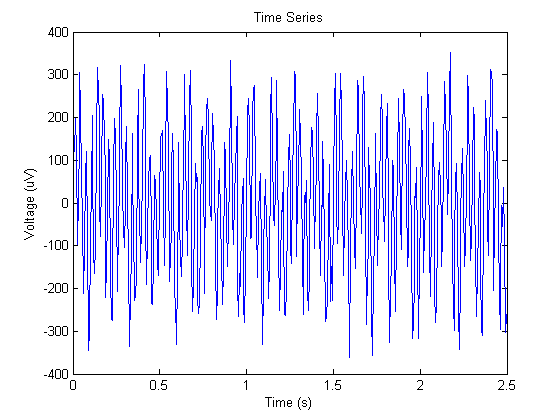
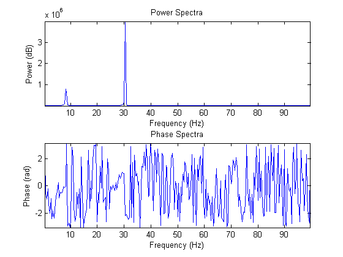

Contents
function [power, phase, freqs] = kyle_fft(data,srate,Ubound)
kyle_fft.m - Compute a FFT and get back the results
load in the data and subtract the mean for each channel
data = data - repmat(mean(data,2),1,size(data,2));
compute each time point
time_points = size(data,2);
time_points_clipped = 2^nextpow2(time_points);
figure; plot(0:1/srate:(time_points-1)*(1/srate),data); title('Time Series'); xlabel('Time (s)'); ylabel('Voltage (uV)');

power of each frequency
X = fft(data,time_points_clipped,2);
power = (X.*conj(X)/time_points_clipped);
power(:,ceil(time_points_clipped/2):end) = [];
phase of each frequency
phase = angle(X);
phase(:,ceil(time_points_clipped/2):end) = [];
frequencies
freqs = srate*(0:(time_points_clipped/2)-1)/time_points_clipped;
freqs(1) = [];
if Ubound < max(freqs)
Ubound_pos = find(freqs >= Ubound,1);
else
[~, Ubound_pos] = max(freqs);
end
Ubound_pos = round(Ubound_pos);
plot the data
figure; subplot(2,1,1); plot(freqs(1:Ubound_pos),power(:,1:Ubound_pos)); axis tight; title('Power Spectra'); xlabel('Frequency (Hz)'); ylabel('Power (dB)');
subplot(2,1,2); plot(freqs(1:Ubound_pos),phase(:,1:Ubound_pos)); axis tight; title('Phase Spectra'); xlabel('Frequency (Hz)'); ylabel('Phase (rad)');
